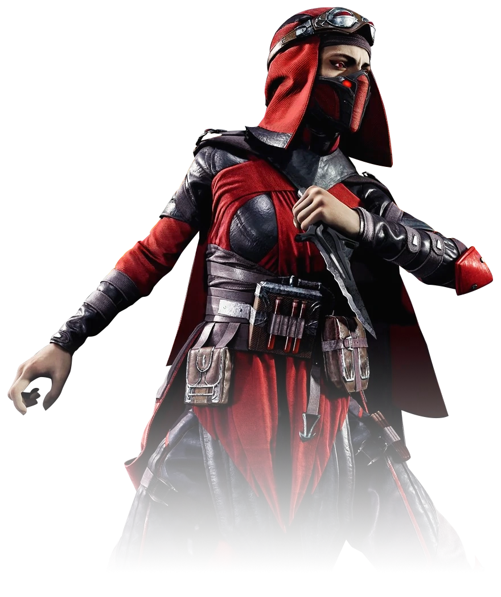

Skarlet

Skarlet es una de las guerreras más enigmáticas de la serie "Mortal Kombat". Su origen está vinculado a la magia y la sangre. Fue creada por el hechicero Shang Tsung como un experimento en la primera entrega de la serie, aunque no se la presentó oficialmente hasta "Mortal Kombat: Arcade Kollection" y posteriormente en "Mortal Kombat (2011)". Skarlet es una criatura de sangre que, en esencia, es una mezcla de magia y poder sanguíneo. A lo largo de la serie, su historia se ha desarrollado para mostrar que es una guerrera que busca cumplir con los deseos de su creador o actuar de acuerdo con sus propios objetivos oscuros. Su conexión con la sangre le da una ventaja en combate y la distingue de otros personajes.

Mileena es conocida por su llamativa y seductora apariencia. Generalmente se la ve con un traje ajustado que resalta su figura esculpida, con detalles que suelen variar entre un conjunto de cuero o una combinación de materiales exóticos, que enfatizan tanto su agilidad como su atractivo visual. Sus trajes a menudo presentan colores intensos como el rosa y el morado, que añaden un aire de sofisticación y glamour a su imagen. Uno de los aspectos más intrigantes de Mileena es su rostro. Aunque su belleza es innegable, su apariencia tiene una faceta inquietante: bajo una máscara que lleva para ocultar su deformidad, su boca oculta unos colmillos afilados que se revelan en momentos de combate. Este contraste entre su belleza y su amenaza subyacente añade una capa de misterio y sensualidad oscura a su carácter.

Skarlet es una de las guerreras más enigmáticas de la serie "Mortal Kombat". Su origen está vinculado a la magia y la sangre. Fue creada por el hechicero Shang Tsung como un experimento en la primera entrega de la serie, aunque no se la presentó oficialmente hasta "Mortal Kombat: Arcade Kollection" y posteriormente en "Mortal Kombat (2011)". Skarlet es una criatura de sangre que, en esencia, es una mezcla de magia y poder sanguíneo. A lo largo de la serie, su historia se ha desarrollado para mostrar que es una guerrera que busca cumplir con los deseos de su creador o actuar de acuerdo con sus propios objetivos oscuros. Su conexión con la sangre le da una ventaja en combate y la distingue de otros personajes.